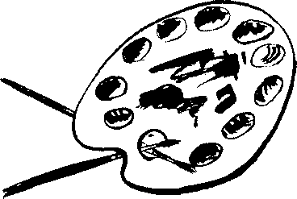

A
Âfâk: Ufuklar
Âfâk-ı ekalîm: İklimlerin ufukları
Âfitab: Güneş
Agleb-i ihtimâl: Büyük bir ihtimalle
Akdem: En önce
Akdes: En kutsal
Âmm: Umuma ait, halk
Asâr: Eserler
Asya-ı Vustâ: Orta Asya
Ateş-i sûzân: Yakıcı ateş
Ateşin: Ateşten, ateşli
Azimet: Gitme, ulaşma, varma
B
BânI: Kurucu
Bendegân: Köleler, bağımlılar
Beşûş: Gülen, güleryüzlü
Beyyine: Kanıt
Bî-manend: Eşsiz
Bî-nazîr: Benzersiz
Bî-nigâh: Bakımsız, sefil
Bî-rahm: Merhametsiz, acımasız
Bükâ: Gözyaşı dökme
Bükâ-yi sürûr-u şedîd: Sevinçten hüngür hüngür ağlama
Büldân: Beldeler
Bünyâd: Temel
C
Cebânet: Korkaklık
Cerâim: Cürümler, suçlar
Cidâl: Savaş
Cihândâri: Padişahlık
Cûndi: Atlı, süvari
D
Dâiye-i fâside: Bozuk arzular
Dârülhadis: Hadis çalışılan okul
Dâûssıla: Sılayı özleme, nostalji
Devâir-i devlet: Devlet daireleri
Devletmeâb: Devlet sahibi, hükümdar
Dîde: Göz
Diğerkâm: Başkalarını düşünen
Dilhûn: Gönlü/içi kan ağlayan
Duhter: Kız evlat, kız
Duhûl: Giriş, girme
Düvel-i ulyâ: Yüce devletler
E
Ebaanced: Dededen, babadan
Ecdâd: Dedeler
Edvâr: Devirler, zamanlar
Eflâk: Felekler, gökler, dünyalar
Eflâk-ı Seb’a: Yedi dünya
Ehem: Çok önemli
Elkab: Lakaplar
Erganûn: Org
Ervâh: Ruhlar
Etrâf ü eknâf: Yan, yöre
Etrâk: Türkler
Ezkiyâ: Zekiler, erdemliler
Ezmine: Zamanlar
Ezmine-i kadîme: Eski zamanlar
F
Fahâmetmeâb: Yüceliğin barındığı yer/kimse
Fâris: Sipahi, süvari
Fehm: Anlama, anlayış
Fehvâ: Mânâ, anlam, kavram
Ferişte: Melek
Ferraş: Hizmetçi, süpüren
-fersa: Yoran, aşındıran
Ferzend: Oğul, çocuk
G
Gark: Boğulma
Giryan: Ağlayan
Girye: Ağlama, gözyaşı
Gûmrâh: 1. Yolunu şaşırmış 2. Gür
Gûzâr: Geçmek
H
Habâset: Habislik, kötülük
Hâb-ı gaflet: Gaflet uykusu, aymazlık
Halâs: Kurtulma, kurtuluş
Hâlât-ı nevadire: Nadir haller
Halayık: Yaratıklar, insanlar
Halvetnişîn: Tek başına oturan, köşesine çekilmiş
Harâbezâr. Viranelik
Harikzedegân: Yangından zarar görenler
Hâss: Seçkin
Haşyet: Korku
Hempa: Ayakdaş
Here ü merc: Karışık, darmadağınık
Hezâr: Bin sayısı
Hırâmân-ı seylâb: Yavaş akan sel
Hisseyâb: Hisselenen, pay alan
Hizb: Şeyh ile mûrid arasındaki gizli işaret
Hûb: Güzel, hoş
Hubmesihî: Hz. İsa'nın tüm peygamberlerden üstün olduğunu savunanlar
Huffâş: Yarasa
Hurûc: Çıkış, ayaklanma
İ
İbâdullah: Allahın kulları
İbn: Çocuk, oğul
İctisâr: Cesaret etmek
İftirâk: Ayrılma, dağılma
İhdâs: Kurma, ortaya çıkarma
İhsâs: Hissettirme
İhvân: Arkadaşlar, kardeşler
İkame: Yerine koyma
İkrâh: İğrenme
İkrâr: Söyleme, kabul etme
İlliyet: Nedensellik
İnkıraz: Soyu tükenme
İnkısâm: Bölünme
İnkıtâ: Ara, ara vermek
İnsicâm: Düzgün ve tutarlı söz
İnşirâh: Gönül açılması, ferahlık
İrkâb: Binme, bindirme (gemi, at vs)
İsrailiyat: İsrailogulları hakkındaki menkıbe ve öyküler külliyatı
İstical: Acele ettirme, hızlandırma
İstidlâl: Çıkarsama
İstifhâm: Soru, sorma, soru işareti
İstiskal: Yüz vermemek, küçük görmek
İştiyâk: Arzu, heves, özleme
İzâm: Büyükler
İzhâr: Göstermek, meydana çıkarmak
İzmihlâl: Yok olma
K
Kableltarih: Tarih öncesi
Kadem: Ayak, adım
Kahhâr: Kahredici
Kari’: Okuyucu
Kavânîn: Kanunlar
Kelb: Köpek
Kerrake: Yünden mamul, ince cüppe
Kıtâl: Kınm, katliam
Kıyamet-i sugra: Küçük kıyamet
Kilâb-ı zulm: Zulmün köpekleri
Küşad: Açılış
L
Lâl: 1.Dilsiz 2. Kırmızı
Lânazîr: Eşsiz, benzersiz
Lâyemût: Ölümsüz
Lâyetecezzâ: Bölünmez, bütün
Lâyetegayyer: Değiştirilemez
Lâyetenâhî: Sonsuz, sonu olmayan
Lâyugleb: Yenilmez
Lebâleb: Çok dolu
Lengerendâz: Demir atmış
Lerzenâk: Titrek
M
Mahâfil: Mahfiller
Mahzûz: Haz almış, mutlu olmuş
Maslûb: Asılmış, idam edilmiş
Matûh: Bunak
Mazrûf: Zarfın içindeki, zarfa konmuş
Mebde: Başlangıç
Mebzûl: Bol, çok
Medfûn: Gömülmüş, defnedilmiş
Medyun: Borçlu
Mehr-i muaccel: Evlenirken erkeğin kadına nikâhı bedelinde hemen ve peşin olarak yaptığı ödeme
Melce: İltica edecek yer, kaynak
Memâlik: Ülkeler, memleketler
Memsûn: Mesane hastalığına tutulmuş
Memşâ: Tuvalet, kenef
Memûl: Umulan, beklenen
Menâkıb: Menkıbeler
Menhûs: Uğursuz
Menkûha: Nikâhlı kadın, eş
Mensûh: Nesh olunmuş, yürürlükten kaldırılmış
Mesküt: Söylenmemiş
Mestâne: Sarhoş, sarhoşça
Meşâyih: Şeyhler
Metrûk: Terk edilmiş
Mevc: Dalga
Mevrûs-u peder: Babadan kalmış
Meyyâl: Eğilimli
Muattal: Boş, işlevsiz
Muazzeb: Azap içinde, sıkılmış
Mufassal: Tafsilatlı, ayrıntılı
Muhâcim: Saldıran
Muhannes: Kadın gibi, kadınlaşmış
Muhâtara: Tehlike
Muhâvere: Karşılıklı konuşma
Muhayyel: Hayal edilmiş
Muhayyil: Hayal eden
Muhtasar: Sınırlı, özet
Muhtell: Bozulmuş, ihtilale uğramış
Muhterik: Yanmış
Mukallid: Taklit eden
Mukarribun: Kurban vermeye yetkili rahipler, “yakınlaştıranlar”
Mukasame: Bölme, bölüşme
Mûmâileyh: Adı geçen (erkek)
Muntazır: Bekleyen
Murassa: Mücevherler ile süslenmiş
Musâhib: Sohbet eden, arkadaşlık eden
Mutâd: Alışılmış, alışkanlık haline gelmiş
Mutantan: Tantanalı, gösterişli
Muvaşşah: Akrostişli manzume
Mübâriz: Savaşçı
Mûbeddel: Değiştirilmiş, değişmiş
Mübtezel: Değersiz
Mücellâ: Cilalı, parlak
Mücessem: Cisme bürünmüş, somut
Müdâni: Yakın, eş, benzer
Müdavim: Bir yere sürekli giden
Mûddet-i medide: Uzun bir zaman
Müdekkik: Araştırıcı, tetkik eden
Müdevver: Devredilmiş
Müesses: Kurulmuş
Mûfsid: İfsad eden, karıştırıcı, bozucu
Müheyyâ: Hazır
Mühlik: Tehlikeli, helak eden
Mülâbese: Yakınlık, ilişki
Mülemma: Bulaşmış, sıvanmış
Mülevves: Pis, kirli.
Mümâsil: Benzer
Mümzî: İmzalayan
Münfehim: Anlamış
Münhedim: Yıkılmış
Münhezim: Hezimete uğramış, yenilmiş
Münkalib: Yeni bir kalıba girmiş, dönüşmüş
Münkariz: Soyu tükenmiş
Münşî: İnşa eden, düzyazı yazan
Müntakim: İntikam alan (Tanrı’nın sıfatlarından)
Müntehir: intihar etmiş
Müsellâh: Silahlanmış
Müsellem: Teslim edilmiş, su götürmez
Müsned: Isnad edilmiş
Müstear: Takma ad, kalem adı
Müsteşrik: Şarkiyatçı, oryantalist
Müstezâd: Artmış, çoğalmış, kabarmış
Mûşâbehet: Benzeyiş
Mûşehhas: Şahıslaşmış, şahsında bir şeyi temsil eden
Müşteki: Şikâyetçi
Mütecessis: Meraklı
Müteehhil: Evli, evlenmiş
Müteferrika: “Ayrılmış" (sic.)
Mütehakkim: Tahakküm eden, despot
Müteharrik: Hareketli
Müteheyyic: Heyecanlı, coşkun
Mütekaid: Emekli
Mütekebbir: Pek kibirli, büyüklük taslayan, kendini beğenmiş
Mütenevvi: Çeşitli, türlü.
Müteverrih: Müverrihin sahtesi, tarihçi geçinen
Müteyakkız: Uyanık, alarm durumunda
Mütezelzil: Tezelzül eden, sarsılan, titreyen
Müvehhim: Paranoyak
Müvesvis: Kuruntulu, vesveseli
Müyesser: Kolayca yapılan
Müzehheb: Tezhipli, altınla süslenmiş
Müzeyyen: Süslü
N
Naam: Evet
Nâdân: Cahil
Nâhak: Haksız
Nakale: Nakledenler, aktaranlar
Nâkes: Kişi olmayan, cimri
Nâkıs: Eksikli, tam olmayan
Nâmizâc: Hasta
Nâmütenâhî: Sonsuz
Nasb: “Dikme”, tayin etme
Nâzende: Nazlı, şirin
Necâset: Pislik, dışkı
Neccâr: Marangoz
Nefs-i emmâre: İnsanı kötülüğe zorlayan nefis
Neşv ü nemâ: Büyüme, yetişme
Netâyic-ûl tahayyülat: Hayal edişlerin, kurmaların sonuçları
Nevâhî: Yerler, nahiyeler
Nisâ: Kadınlar
Nûş: İçki, içmek
Nutfe: Sperm, meni
Nüve: Çekirdek
P
Penah: Sığınacak yer
Pereng-i Satvet: Güçlü, zorlu kılıç
Perrân: Uçan
R
Rahne: Hasar, yırtık, gedik
Raiyyet: Sürü, hayvan sürüsü, bir hükümdarın vergi veren halkı
Râviyân: Rivayet edenler, anlatanlar
Remiz: İşaret
Ricâl: Erkekler, devlet adamları
Rikâb-ı Hümâyûn: Sultanın üzengisi, sultanın maiyeti anlamında
Rikkat: Acıma, merhamet
S
Sâdedilân: Saflar, temiz yürekliler
Sâmit: Sessiz, sesi çıkmayan
Sebeb-i Evvel: Birinci neden, Allah
Sebkat: Geçen, geçmiş
Sec: Düzyazıda uyak
Sefine: Gemi
Selefiyyun: Selefler, daha önce yaşayanlar, atalar
Serâpâ: Tepeden tırnağa (Baştan ayağa)
Serturnaî: Yeniçeri zabitlerinden turnacıbaşı
Server: Ulu, büyük
Simin: Gümüş, gümüşten yapılmış
Sittin: Altmış
Sugrâ: Küçük
Ş
Şâhika: Zirve, doruk
Şarmuta: Kancık köpek, orospu
Şedîd: Şiddetli
Şirâze: Düzen, nizam
Şîr-i jiyân: Kükreyen aslan
Şuhud-u kal: Şahitler, bir olayı gözüyle görenler
T
Taaccüb: Şaşırma
Tadâd: Sayma
Tagaddi: Gıda alma, beslenme
Tağşiş: Karıştırma, saflığını bozma
Tahammülfersâ: Katlanılmaz
Tahassürât: Hislenmeler, duygulanmalar
Tahattur: Hatırlamak
Tahavvül: Değişme
Tahfif: Hafifletme, hafife alma
Tahrir: Yazmak
Tamu: Cehennem
Tamülaza: Bütün azalan, organları tam, sağlam
Tarik: Yol
Tatyîb: Hatırını hoş etmek [Kızım, son kez düzeltiyorum: evet Tatyîb, Tayyib değil! I.K.]
Tavattun: Yerleşme, vatan yapma, yun tutma
Tebahhur: Buharlaşma
Tebdil: Değiştirmek
Tebeddülât: Değişiklikler
Tebellür: Kristalleşme, billurlaşma
Tecdîd: Yenileme
Tecennün: Delirmek
Tedennî: Alçalma, gerileme
Teenni: Yavaş hareket etme, ağırdan alma
Tefekkür: Düşünce
Tefrik; Ayırma
Tehâlük: Kendini helak etme, paralama, bir şeye can atma
Tekellüm: Konuşma
Tekfin: Kefenleme
Temellük: Mülk edinme, sahip olma
Temerküz: Toplanmak
Tenâkuz: Çelişki
Tenâsüh: Ruh göçümü, ruhun başka bedende ortaya çıkması
Tennure: Eteklik
Tetebbu: Çalışma, inceleme
Tevâbi-i tevehhûmât: Hayali varlıkların hizmetkârları [Nasıl? l.K.]
Tevahhuş: Korkuya düşme
Tevârih: Tarihler
Tevârüs: Miras yoluyla edinme
Tevehhüm: Vehmetme, zannetme, kurma
Tevzi’: Dağıtma, üleştirme
Tezevvüc: Evlenme
Tezyîd: Arttırma, çoğaltma
Tezyîf: Zayıflatma, alay etme
Tullâb: Talebeler, öğrenciler
Turne: Yiyecek, azık
Tume-i Şimşir: Kılıca yem olmak, kılıçtan geçmek
U-Ü
Uçmak: Cennet
Umûr: İşler
Uzletnişîn: Yalnız yaşayan
Üdebâ: Edipler
V
Vâcib-ül Vûcûd: Varlığı gerekli olan, Allah
Vedia: Emanet
Vehm: Kuruntu, korku
Visâl: Sevgiliye kavuşma
Vustâ: Ona, iç
Y
Yavegûluk: Saçma sapan konuşmak
Yekmıh: Çarmıh gibi bir şey olacak [Kızım kontrol edin, bu herif bunu uydurmuş galiba! l.K]
Z
Zâid: Fazla, fuzuli, artık
Zebân: Dil, lisan
Zecel: İrticalen söylenen şarkı
Zehâb: Zan, bir düşünceye sapma
Zevât-ı Kiram: Büyükler, büyük zatlar
Zeyl: Ek
Zühûl: Dalgınlık, yanlışlık
Zülbank: Gülbank gibi bir şey mi? [Yine sözlüklerde yok! Kızım kontrol edin, banka reklamı filan yapıyor olmasın bu? l. K.)